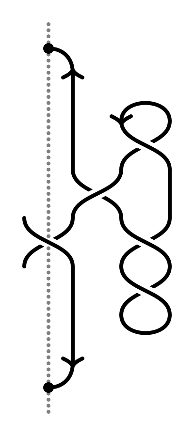

show all invariants|show all metadata
Input data and context

% s.l2.x2.y1.x0.x2.x2.u2
s.l2.x2.y1.x0.x2.x2.u2
,1
% Simplifies with options '-qs' to l0
Bar-Natan multicurve \(\mathrm{\widetilde{BN}}(T)\)
options -c2-qs
(diagram)
(metadata)
% file 'examples/words/w8d20e6c025e0/cxBNr-c2-qs', generated by kht++ 0.1 on Mon Nov 16 17:41:48 2026 UTC
1) h^0 q^0 δ^0 ⬮
Khovanov multicurve \(\mathrm{\widetilde{Kh}}(T)\)
options -c2-qs
(diagram)
(metadata)
% file 'examples/words/w8d20e6c025e0/cxKhr-c2-qs', generated by kht++ 0.1 on Mon Nov 16 17:41:48 2026 UTC
1) h^-1 q^-1 δ^1/2 ⬮~~S^2~>⬮<— r(0) q^0 δ|^1/2